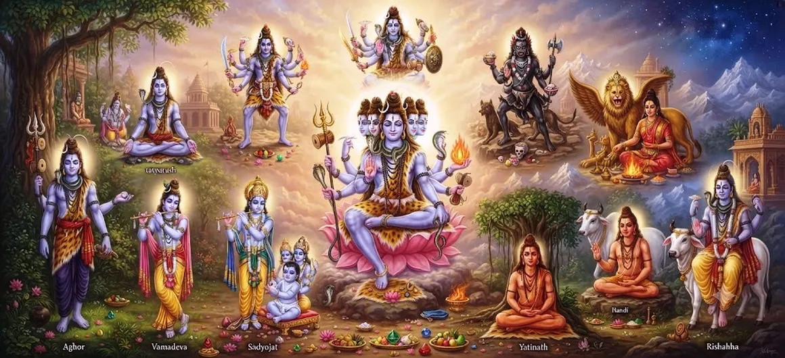

Ten Incarnations of Shiva
Chapter 17 of the Shatarudra Samhita turns to the sacred tradition of the Ten Incarnations of Lord Shiva. Following the manifestation of Yaksheshvara, this chapter continues the exploration of the many divine forms through which the glory and power of Mahadeva are contemplated.
The Ten Incarnations provide a framework for contemplating Shiva through distinct manifestations, qualities, spiritual purposes, and divine expressions. Each manifestation may be approached as a doorway into deeper reflection on the Supreme.
The chapter also prepares the reader for the following discussion of Shiva's Eleven Incarnations, continuing the broader account of Shiva's sacred manifestations within the Shatarudra Samhita.
Chapter 17 Highlights
Ten Divine Manifestations
The chapter focuses on the sacred tradition of ten manifestations associated with Lord Shiva.
Divine Forms
The different forms provide distinct ways of contemplating the glory of Mahadeva.
Shiva Tattva
The manifestations encourage contemplation of the deeper spiritual nature of Shiva.
Devotion
Contemplation of Shiva's manifestations deepens reverence and devotion toward Mahadeva.
Spiritual Reflection
The chapter invites seekers to reflect on the many dimensions of divine manifestation.
Continuing the Sacred Narrative
The chapter leads naturally toward the following account of Shiva's Eleven Incarnations.
Core Topics in This Chapter
- 01 The Ten Incarnations of Shiva →
- 02 The Nature of Divine Manifestations →
- 03 Understanding Shiva Tattva →
- 04 Divine Qualities and Expressions →
- 05 Devotion and Worship →
- 06 Spiritual Reflection →
- 07 The Unity Behind the Manifestations →
- 08 Guidance for Devotees →
- 09 Toward Shiva's Eleven Incarnations →
- 10 The Spiritual Message of the Chapter →
The Ten Incarnations of Shiva
The seventeenth chapter introduces the sacred subject of the Ten Incarnations of Shiva. Within the larger framework of the Shatarudra Samhita, these manifestations form another stage in the contemplation of the many ways in which the glory of Lord Shiva is revealed.
The number ten provides a structured way of approaching the manifestations, while the underlying spiritual focus remains the recognition of Shiva as the Supreme Divine Reality.
The Nature of Divine Manifestations
Divine manifestations allow the Infinite to be contemplated through forms and narratives that can be approached by devotees. The sacred tradition uses these manifestations to express different dimensions of divine power, grace, protection, transformation, and spiritual knowledge.
Contemplating the incarnations does not require separating them from the Supreme. Instead, each manifestation can be understood as another window through which the devotee contemplates the glory of Shiva.
Understanding Shiva Tattva
Shiva Tattva points toward the deeper spiritual reality represented by Lord Shiva. The different manifestations are valuable not merely because they are distinct forms, but because they encourage contemplation of the Supreme principle underlying them.
Through devotion and contemplation, the seeker can move from observing individual forms toward a deeper awareness of the unity behind them.
Divine Qualities and Expressions
The sacred manifestations associated with Shiva allow devotees to contemplate different expressions of divine reality. Some forms may inspire thoughts of protection, others transformation, wisdom, grace, strength, compassion, or spiritual discipline.
Such contemplation allows the devotee to approach Shiva through qualities that can be consciously practiced in daily spiritual life.
Devotion and Worship
Devotion is central to the contemplation of Shiva's manifestations. Remembering the divine forms with reverence can strengthen faith and encourage the devotee to cultivate humility, discipline, compassion, and spiritual awareness.
Worship therefore becomes more than an external practice. It becomes a means of directing the mind toward the Divine and recognizing Shiva as the deeper reality behind all sacred manifestations.
Spiritual Reflection
The Ten Incarnations provide an opportunity to reflect on the relationship between the many and the One. The Divine may be contemplated through different manifestations, yet the underlying spiritual reality remains connected with the Supreme.
This approach encourages devotees to move beyond merely collecting names and forms and instead ask what spiritual qualities each manifestation awakens within the heart.
The Unity Behind the Manifestations
Although divine manifestations may be described individually, the spiritual tradition points toward an underlying unity. The many forms do not diminish the Supreme; rather, they provide different approaches for contemplating the immeasurable nature of Shiva.
Recognizing this unity allows the devotee to appreciate diversity in sacred forms while maintaining awareness of the Supreme Reality that transcends every individual expression.
Guidance for Devotees
Devotees can use the contemplation of Shiva's manifestations as a means of spiritual practice. Rather than simply remembering the names of divine forms, one may reflect upon the qualities represented by them and seek to bring those qualities into daily conduct.
Regular remembrance of Lord Shiva can cultivate devotion, humility, patience, strength, compassion, and awareness of the Divine.
Toward Shiva's Eleven Incarnations
The discussion of the Ten Incarnations prepares the reader for the next stage of the sacred narrative. The following chapter turns toward Shiva's Eleven Incarnations, continuing the exploration of the divine manifestations associated with Mahadeva.
The movement from ten manifestations to eleven demonstrates the continuing richness of the sacred tradition and invites devotees to continue their study with an open and contemplative mind.
The Spiritual Message of the Chapter
The central spiritual reflection of this chapter is that the Divine can be contemplated through many sacred manifestations without losing sight of the underlying unity of the Supreme. The different forms encourage different forms of devotion, meditation, understanding, and spiritual practice.
The devotee is therefore encouraged to approach the Ten Incarnations with reverence, contemplation, and devotion, recognizing that every sacred form points beyond itself toward the immeasurable glory of Shiva.
Key Teachings of Chapter 17
Divine Manifestation
The many manifestations provide different approaches to contemplating Lord Shiva.
Unity
Behind the diversity of sacred forms remains the deeper unity of the Supreme.
Devotion
Meditation on Shiva's manifestations can deepen devotion and reverence.
Contemplation
Sacred forms become opportunities for deeper spiritual contemplation.
Spiritual Qualities
Devotees can reflect on divine qualities and seek to express them in daily life.
Spiritual Continuity
The chapter naturally prepares the reader for the following account of Shiva's Eleven Incarnations.
Spiritual Reflection
The Ten Incarnations of Shiva can be approached as a meditation on the richness of divine manifestation. The Infinite is beyond every limited form, yet sacred traditions provide forms and narratives through which devotees can approach the Divine with love and reverence. Each manifestation can awaken a different dimension of spiritual awareness. The devotee may contemplate divine strength while cultivating inner courage, divine compassion while practicing kindness, divine wisdom while seeking knowledge, and divine grace while developing humility and surrender. In this way, contemplation of Shiva's incarnations becomes more than an intellectual study of sacred names. It becomes a spiritual practice through which the mind repeatedly turns toward Mahadeva. The diversity of manifestations also reminds the seeker that the Divine cannot be confined to a single outward expression. Behind the many forms is the greater spiritual unity of Shiva, whose glory transcends ordinary measurement and understanding.
Living the Message of Chapter 17
The teaching of the Ten Incarnations can be brought into daily life by consciously cultivating the virtues associated with devotion to Shiva. A devotee may seek courage when facing difficulty, compassion when dealing with others, patience during uncertainty, humility after success, and wisdom when making important decisions.
Regular remembrance of Mahadeva can transform ordinary actions into opportunities for spiritual practice. The purpose is not merely to know the manifestations, but to allow remembrance of Shiva to influence thought, conduct, and devotion.
Key Spiritual Concepts
The sacred subject of Chapter 17 concerning ten divine manifestations associated with Lord Shiva.
The deeper spiritual principle and reality represented by Lord Shiva.
A sacred expression through which devotees contemplate the glory and qualities of the Divine.
Loving devotion, remembrance, reverence, and surrender toward Lord Shiva.
Reflecting deeply on divine forms and the spiritual qualities they inspire.
Recognition of the deeper unity underlying the diversity of sacred manifestations.
Chapter Summary
Shatarudra Samhita Chapter 17 presents the sacred subject of the Ten Incarnations of Shiva. Following the account of Shiva's Incarnation as Yaksheshvara, the narrative continues its exploration of divine manifestations associated with Mahadeva. The chapter provides a framework for contemplating the Divine through different sacred expressions while recognizing the deeper unity of Shiva behind the diversity of forms. The manifestations can be approached through devotion, meditation, reverence, spiritual reflection, and the conscious cultivation of divine qualities. The chapter also encourages the devotee to move beyond merely remembering names and forms and to consider how contemplation of Shiva can influence daily life. By approaching the Ten Incarnations with humility and devotion, the seeker can deepen awareness of Shiva Tattva and prepare to continue into the following chapter concerning Shiva's Eleven Incarnations.
Frequently Asked Questions
① What is the subject of Shatarudra Samhita Chapter 17?
Chapter 17 concerns the Ten Incarnations of Shiva and continues the sacred sequence of divine manifestations within the Shatarudra Samhita.
② Why are Shiva's incarnations important?
Shiva's manifestations provide different ways for devotees to contemplate divine qualities, spiritual principles, devotion, and the glory of Mahadeva.
③ What is the central spiritual idea of the Ten Incarnations?
A central theme is that the Divine may be contemplated through many sacred forms while the underlying Supreme Reality remains one.
④ How can devotees reflect on the Ten Incarnations?
Devotees can contemplate the divine manifestations through prayer, remembrance, meditation, reverence, and by practicing the spiritual qualities they inspire.
⑤ What chapter comes before Ten Incarnations of Shiva?
The previous chapter is Shiva's Incarnation as Yaksheshvara.
⑥ What chapter comes after Ten Incarnations of Shiva?
The next chapter is Shiva's Eleven Incarnations.
“The many sacred forms lead the devotee toward the one Supreme Reality of Shiva.”
Continue Through Shatarudra Samhita
Continue from Shiva's Incarnation as Yaksheshvara into the sacred account of the Ten Incarnations of Shiva, and then proceed to Shiva's Eleven Incarnations.